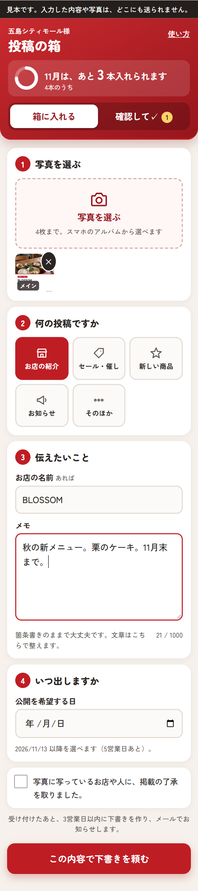
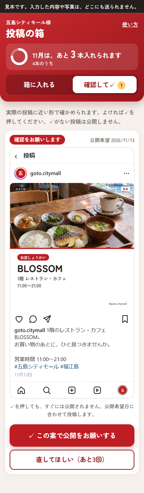
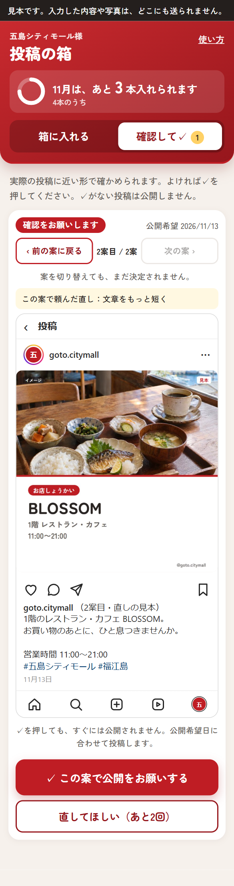

スマホから送れます。文章は箇条書きのままで大丈夫です。
受付から3営業日以内に、写真を整え、AI も使って文章を作ります。内容はこちらで確かめ、できたらメールでお知らせします。
直したい所があれば、3回まで作り直します。前の案の方がよければ、戻すこともできます。
✓がない投稿は公開しません。
今お見せできるのは、箱と確認の画面の見本です。Instagram への公開につなぐ部分は、御社のアカウントの権限を確かめてから作ります。つなげない場合は、✓のあとの投稿の進め方を別にご相談します。

箱の画面（見本）
上のメーターで、今月あと何本入れられるかが分かります。ログインのパスワードは要らず、「あいことば」で開きます。

確認の画面（見本）
Instagram で見た時に近い画面で、写真と文章を確かめられます。
✓ この案で公開をお願いする
押しても、すぐには公開されません。公開希望日に合わせて投稿します。
直してほしい（3回まで）
直す所を書いて送ると、新しい案を作ります。
前の案に戻る
「前の方がよかった」時は、回数を使わずに前の案へ戻れます。切り替えるだけでは決定されません。
実際の表示と少し違うことがあります。

作り直したあと：前の案に戻れます
契約書のたたき台と同じ内容です。お打ち合わせで調整できます。
| 投稿の本数 | 月4本まで |
|---|---|
| 受付の締め切り | 公開を希望する日の5営業日前まで |
| 下書き | 受付から3営業日以内にお知らせ |
| 作り直し | 1投稿につき3回まで。前の案へ戻すのは回数に入りません |
| 公開の条件 | ✓がない投稿は公開しません |
| 写真の了承 | 写っているお店や人への確認は御社にお願いします |
できるだけ、パスワードではなく権限を付ける形を考えています。今のアカウントでその形が取れるかは、お打ち合わせで確かめます。
公開しません。公開希望日が近づいても✓がない時は、メールでお声がけします。
箱は別の月なら受け付けます。急ぎの投稿は個別にご相談ください。
最初は、御社のご担当者様に集約する形をおすすめします。順番や内容の調整がしやすいためです。
ひなが堂の Google ドライブに、公開設定なしで保管します。Instagram に載せる写真だけ、公開の時に使います。
ハッシュタグといって、Instagram で探してもらいやすくするための印です。こちらで入れますので、覚えていただく必要はありません。
文章の下書きと表現の点検に使います。店名、日付、価格などの事実は、いただいた内容から作り、公開前に御社の✓で確かめていただきます。